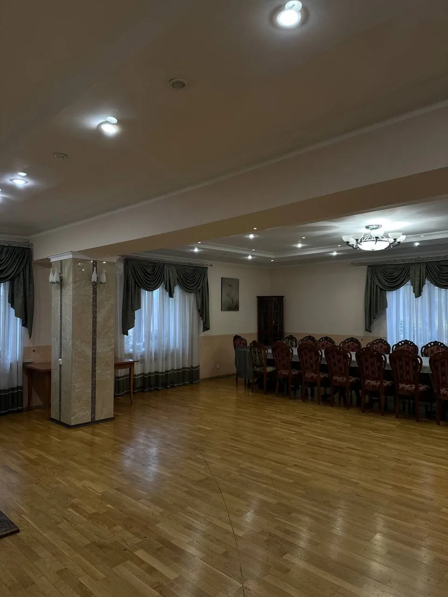
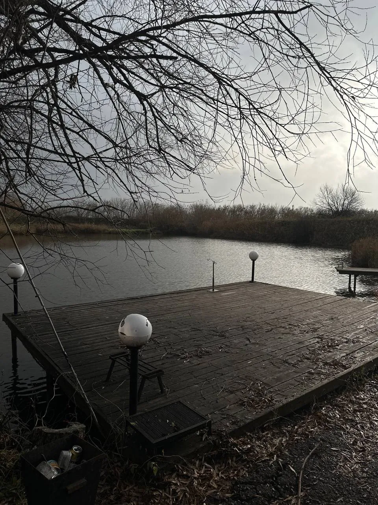
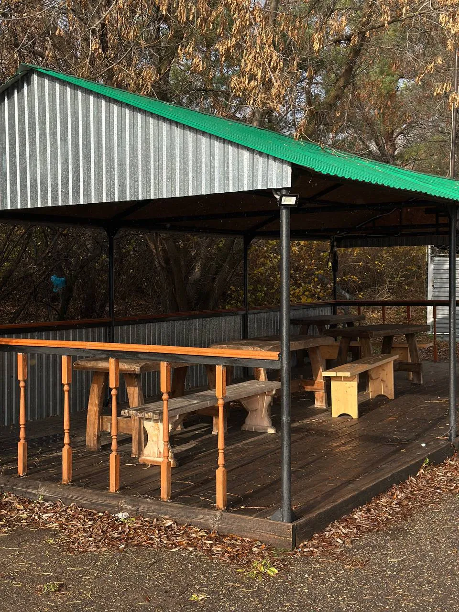

Усадьба
Большой дом со спальнями и зонами для встреч
Загородная усадьба
Загородный отдых среди деревьев и воды.
Время побыть вместе и никуда не спешить.
Об усадьбе
Собраться за большим столом, поговорить у камина, выйти к воде. И никуда не спешить.
«Сосновый бор» — загородная усадьба в селе Тукаево Туймазинского района. Просторный дом и места для отдыха на воздухе — для встреч с семьёй, друзьями и большой компанией.
Количество спальных мест и условия размещения уточняются при обращении.



Знакомство с усадьбой
Большой дом со спальнями и зонами для встреч
Вода, беседки и свежий воздух
Рассмотрите дом и окрестности до поездки.
Будем рады встрече
Республика Башкортостан,
Туймазинский район, село Тукаево
Начните с хорошей компании.
Место для встречи уже есть.
Телефон скоро появится. Точный адрес, стоимость и условия отдыха уточняются.
Контакты и расположение